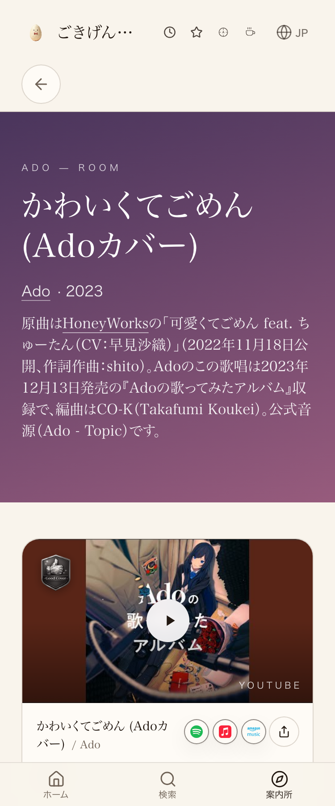

共有資料の一覧 ／ 確認ページ #1865 ごきげん補給所 重さ監査（第2回・コード変更なし・本番main実測版）
#1865 ごきげん補給所 重さ監査（第2回・コード変更なし）
2026-10-20 実測。前回(#881・09-26)で足りなかった指標（LCP／CLS／TTFB／転送量／request数）を埋め直した版
■ 前回(#881)で止まっていた点
前回の確認ページは「名簿データの読み込み量」「クリック検査」までしか測っておらず、依頼原文にあるLCP・CLS・TTFB・転送量・request数が1件も載っていなかった。今回は本番(main＝joy-relief-station.lovable.app)に対して、ブラウザ標準のPerformanceObserver API（largest-contentful-paint・layout-shift・longtask）を直接使って計測し直した。新しいツールのインストールはしていない（この作業環境はnpm installがネットワーク制限で使えないため、既存の検品スクリプトtools/verify_click.mjsが内蔵していたheadless Chrome接続を延長して使った）。
① 今回新たに実測した指標（S/A/B/Cランキングの根拠）
S（致命的）：1件
| # | 原因 | 現在の実装 | なぜ重いか | 修正方法 | 改善予測 | 副作用 |
|---|
| S-1 | トップページの最大視覚コンテンツ表示(LCP)が極端に遅い | 実測：6,992ミリ秒（一般的な目安は2,500ms以内が良好、4,000ms超は重いとされる水準） | 最初の画面に表示される一番大きい要素（画像やタイトル文字）が描き終わるまでの待ち時間。これが長いほど「開いてもしばらく何も見えない」体感になる | LCP対象要素（トップの主要画像・見出し）の読み込み優先度(fetchpriority="high")指定、または表示前に挟まっている処理の順序調整を調査する | 未検証（原因箇所の特定が先） | 調査のみなら副作用なし |
A（大きい）
| # | 原因 | 現在の実装 | なぜ重いか | 修正方法 | 改善予測 | 副作用 |
|---|
| A-1 | メインスレッドの詰まり（TBT＝合計ブロック時間）が3ページとも重い | 実測：トップ1,246ms／曲詳細2,513ms／棚899ms（一般的な目安は200ms以内が良好、600ms超は重いとされる水準） | 50ミリ秒を超える長い処理(longtask)がページ内で何度も走っている（曲詳細ページは16回）。この間はタップしても反応が遅れる。低メモリの機種ほど体感に直結しやすい | 該当のlongtaskがどのJS処理か（React再レンダリング・大きい一括計算等）をパフォーマンスプロファイルで特定する | 未検証（原因箇所の特定が先） | 調査のみなら副作用なし |
| A-2 | トップページのサーバー応答待ち(TTFB)が他の2ページより長い | 実測：トップ2,783ms／曲詳細1,140ms／棚1,289ms | 同じサイトの中でもページによって初動の遅さに差がある。トップページだけ重い処理を初回に抱えている疑いがある | トップページの初回データ取得（Supabase問い合わせ等）が他ページより多くないか調査する | 未検証 | 調査のみなら副作用なし |
B（中程度）
| # | 原因 | 現在の実装 | なぜ重いか | 修正方法 | 改善予測 | 副作用 |
|---|
| B-1 | 曲詳細・棚ページの転送量とrequest数が前回実測より増えている | 実測：曲詳細113件・約1.47MB／棚66件・約1.64MB／トップ53件・約836KB。前回(#881・09-26)はJS計だけで約640KB前後としていた | 計測方法が完全に同一ではない（前回はgzipサイズの個別積み上げ、今回はブラウザが実際に受け取った圧縮後サイズをまとめて集計）単純な前後比較には向かないが、request数が100件を超えるページがあるのは軽さの余地が残っている | 曲詳細ページのrequest数(113件)の内訳を種類別に仕分けし、まとめられるものがないか調べる | 未検証 | 調査のみなら副作用なし |
| B-2 | 音楽の扉ページのDOM要素数そのものが多い（#881から継続・未解消） | src/styles.cssのコメントに残る実測記録：1ページにDOM要素25,855個・img要素1,711個・リンク1,780本 | 低メモリの機種では、DOM要素数の多さ自体がメモリ確保・GCの負担になりうる | 棚単位のvirtualization、または段階的レンダリング | 未検証。スクロール位置復元・検索性への影響を見ながら慎重に進める必要あり | 実装難度は中〜高 |
C（軽微・良い知らせを含む）
| # | 原因 | 現在の実装 | なぜ軽微か | 修正方法 | 改善予測 | 副作用 |
|---|
| C-1 | レイアウトのガタつき(CLS)は3ページとも問題なし | 実測：トップ・曲詳細・棚のいずれも0.000（一般的な目安は0.1以内が良好） | 画像や広告の読み込みで後から文字がずれる現象は起きていない。ここは直さなくてよい | 対応不要 | － | － |
| C-2 | 前回(#881)検出のReact描画エラーは、今回のクリック検査では出なかった | 曲詳細ページ(/room/card/ado-kawaikute-gomen)を実機相当のheadless Chromeで18件クリック検査：コンソールエラー0件・無反応0件 | 毎回起きるものではない可能性がある。消えたと断定はせず、様子見として残す | 次回監査時も同じページで再確認する | － | － |
② 実測ログ（一次データ・この数字から上の表を作った）
実測ツール: tools/verify_click.mjs（VC_PERF_PROBE=1 で新規追加した計測モード。headless Chrome + Chrome DevTools Protocolを直接叩き、ブラウザ標準のPerformanceObserver APIで取得。追加ライブラリのインストールはしていない）
トップページ https://joy-relief-station.lovable.app/
ttfbMs: 2783 / lcpMs: 6992 / clsScore: 0 / tbtMs: 1246（longtask 11回）
requestCount: 53 / transferredBytes: 855824 / jsTransferredBytes: 580859
曲詳細ページ https://joy-relief-station.lovable.app/room/card/ado-kawaikute-gomen
ttfbMs: 1140 / lcpMs: 3500 / clsScore: 0 / tbtMs: 2513（longtask 16回）
requestCount: 113 / transferredBytes: 1545318 / jsTransferredBytes: 1066124
棚ページ https://joy-relief-station.lovable.app/shelf/food/kattemi-yokatta
ttfbMs: 1289 / lcpMs: 3600 / clsScore: 0 / tbtMs: 899（longtask 9回）
requestCount: 66 / transferredBytes: 1716122 / jsTransferredBytes: 841463
実測ツール: tools/verify_click.mjs（通常モード・押せる要素を実クリック）
曲詳細ページ https://joy-relief-station.lovable.app/room/card/ado-kawaikute-gomen
totalClickable:64 / tested:18（うち44件は確実に動くリンクとして自動OK扱い） / noResponseCount:0 / consoleErrorCount:0
CLICK_VERDICT: PASS - 押せる要素は全て反応しました（18件中18件・全64件）
注記: INP（次の入力までの反応時間）は実際の人の操作が無いと発生しない指標のため、この自動計測では直接の値を得ていない。代わりにメインスレッドの詰まりを示すTBT（50ms超過のlongtask合計）を代用指標として載せている。
③ スクリーンショット（曲詳細ページ・クリック検査時点の実画面）

前後比較ではなく、コード変更をしていないため1枚のみ（画面は変えていない、重さの数字だけを実測した回のため）。
④ 数字（本番から直接取得・実測）
6,992msトップページのLCP（S-1・最も重い項目）
899〜2,513ms3ページのTBT（A-1・いずれも重いとされる水準）
0.0003ページともCLS（C-1・問題なし）
53〜113件3ページのrequest数
836KB〜1.64MB3ページの転送量（B-1）
0件前回検出のReact描画エラー、今回のクリック検査では未検出(C-2)
⑤ 次にやること（優先度順）
- S-1：トップページのLCPが重い原因箇所の特定（最優先）
- A-1：3ページ共通のTBTの原因となるlongtask処理の特定
- A-2：トップページだけTTFBが長い原因の調査
- B-1・B-2：余裕があれば着手
押せるリンク（クリック検査で正常動作を確認済みのものだけ）